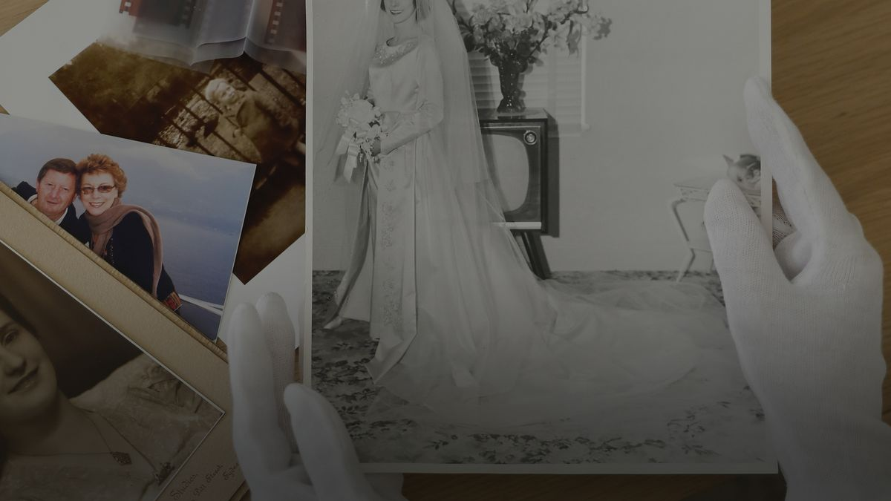
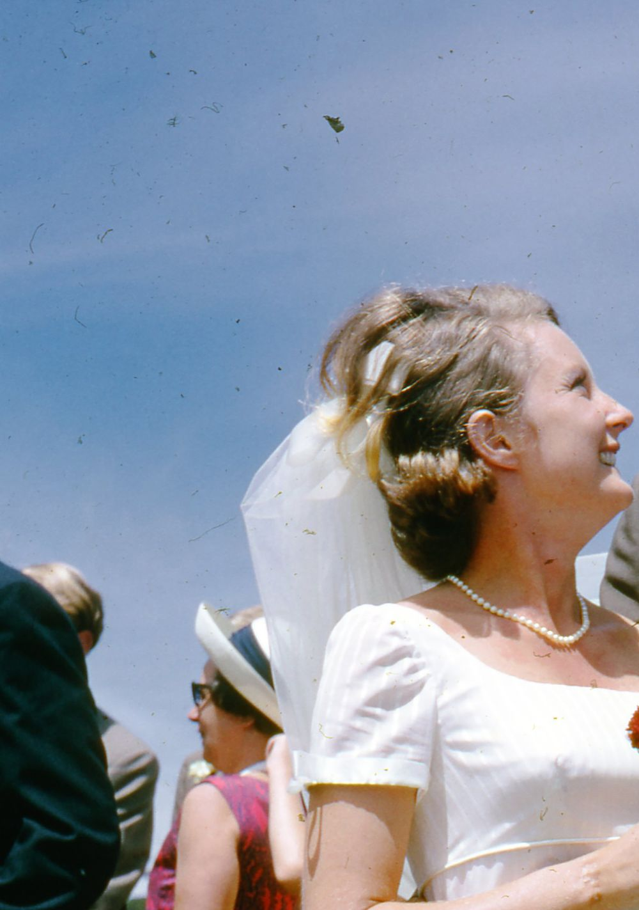
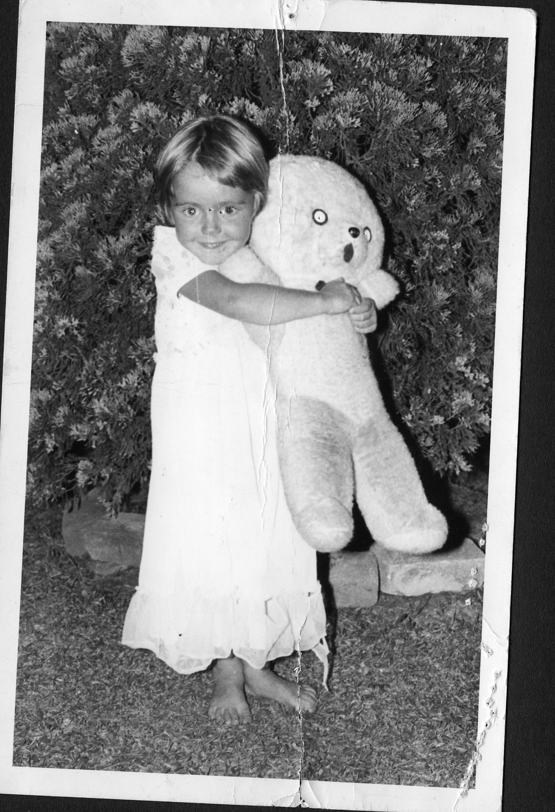
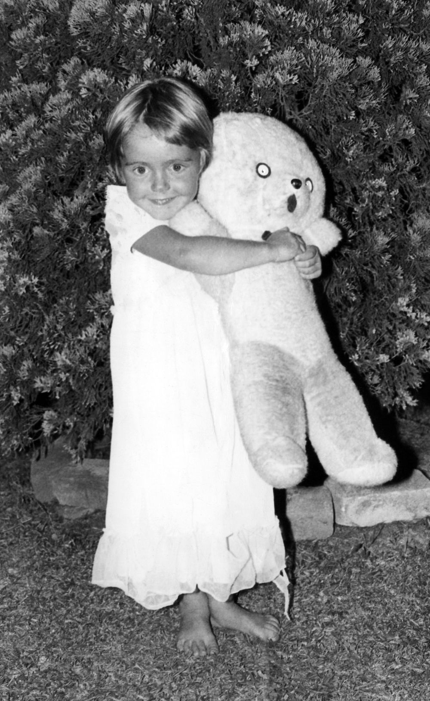

Hello, I'm Kalimna.
The art of remembering and sharing in bespoke photo books.
We all have photos we treasure. From our own childhood, to further back in our family history. They might be prints, slides, polaroids, or even negatives. Wouldn’t it be great to preserve your memories your way? As a photographer I wanted to do something special with my own family photos for my children to enjoy. Stories they have heard, but now won’t forget when put together with the photos taken. I have patiently restored my photo collection and now wish to do this for others.
Fading, stains, tears, mould: undone on the digital copy, without ever touching the original.A wedding photograph: the dust and marks in the sky, seen up close.
Before

After
Before

After

From first phone call to finished book.
We talk
Step 1
A call about your photographs, then a written quote. No obligation.
Your photos
Step 2
Are collected by me personally. I log your photos on my phone, box them to travel safely, and provide paperwork to confirm your project.
Your approval
Step 3
You review every page and approve a full proof before printing.
The book comes home
Step 4
Book, originals, delivered back to you personally.
Common Questions
What happens to my original photographs?
Logged and photographed upon collection, stored in archival sleeves, and returned to you as soon as scanning is complete.
I've inherited boxes of photographs and don't know where to start.
That's exactly what this service is for. Bring me the jumble: prints, negatives, slides, files, whole albums. We'll work out together what's there and what it should become, and every member of the family can share the digital archive.
Can badly damaged photographs be saved?
Almost always. If an image is beyond saving I'll tell you before work begins. You'll never pay to find out.
How long will my book take?
Eight to twelve weeks, typically. One project at a time: the date we agree is the date you get. For an occasion, tell me early and I'll plan backwards from it.
Do you write the stories for me?
No. The words are your family's. I'll give you simple prompts if they don't come easily, and set your words (even your handwriting) beautifully on the page.
I'm not confident with computers. Is that a problem?
Not at all. Most things will happen by phone or in person. If logging into something is an issue we can work around this.
Can my family have copies?
Yes. Extra books can be ordered with your project.